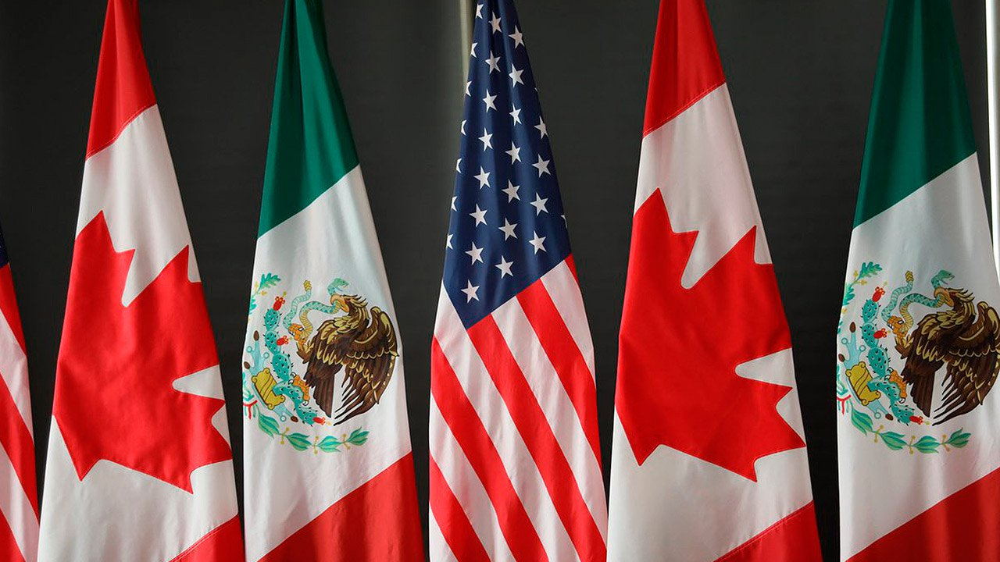

Política exterior multilateral
Estados Unidos
-
1. Replantear la relación con Estados Unidos, defendiendo
nuestra soberanía y dignidad nacional
- 2. Renegociación del Tratado de Libre Comercio de América del Norte
- 3. Atención prioritaria a zona fronteriza con programas de desarrollo focalizados.
-
4. Establecer o/y revisar las normas de operación
de las agencias de seguridad norteamericanas en México.
- 5. Buscar una relación bilateral con Estados Unidos.
-
6. Revisar el marco de seguridad vigente con Esta
dos Unidos para erradicar el tráfico de armas, drogas, etc.

America Latina y Caribe
-
1. Atención prioritaria a l
a Agenda 2030, que es un marco de desarrollo que da
una oportunidad para el Sistema de las Naciones Unidas, a n
ivel mundial y en México, de focalizar la cooperación y programación
, de seguir abogando y promoviendo el tema de inclusión y equidad en un ma
rco de derechos, de construir más ciudadanía para las y los mexicanos en este país.
-
2. Revisión de la Frontera Sur, específicamente al trat
o que reciben los migrantes en esta zona.
-
3. Se continuarán los esfuerzos junto la Asociación Latino
americana de Integración y la Alianza del Pacífico para ampliar las o
portunidades más allá del ámbito económico y comercial.
- 4. Se buscará la cooperación para luchar contra el cambio climático y desastres naturales.
Europa
-
1. Aprovechar al máximo las oportunidades de incrementar
el comercio con la Unión Europea sin que ello signifique disminuir
el comercio con Estados Unidos y Canadá, para incrementar así la inversión europea en México.
-
2. La cooperación en materia de derechos humanos, cultura,
ciencia y tecnología, educación, medio ambiente, combate al cambio climático,
preservación y desarrollo del patrimonio cultural, así como otras áreas de
identificación común, deberá ser reforzada.
Paises Nórdicos
-
1. Se promoverán las inversiones en energías renovables, eficiencia energética y lucha contra el cambio climático.
Italia
-
1. Se buscará la cooperación para combatir el crimen organizado y la conservación cultural, así como el intercambio de experiencias en pequeñas y medianas empresas.
Rusia
(Rusia es de Asia, pero en el sitio de AMLO lo localizan en europa)
-
1. Se buscará la cooperación en los campos de la educación, la ciencia y la cultura, la energía y los intercambios comerciales, entre otros.
Turquía
-
1. Se continuará el diálogo.
Asia
- 1. México pasará a formar parte del Banco Asiático de Inversión en Infraestructura.
-
2. Con China se buscarán áreas de colaboración específica en las que China ya es líder, como en el desarrollo de la energía solar, el comercio electrónico y la construcción de trenes de alta velocidad.
Medio Oriente y Golfo Pérsico
-
1. Se mantendrá un diálogo con los países productores de petróleo del Golfo Pérsico en busca de estabilidad y certeza en los mercados energéticos mundiales y se impulsará el intercambio comercial, en particular de productos agrícolas.
África
- 1. La presencia de México en la región continúa siendo limitada por lo que existe una amplia gama de oportunidades, tanto a nivel económico como comercial.
Vinculación con otros paises de desarrollo similar: Indonesia, Turquía, Corea, Sudáfrica, Nigeria, etc.
-
1. En la reconfiguración del orden mundial, los países de desarrollo medio similares a México jugarán un papel cada vez más relevante para el país, ya que la posibilidad de una efectiva cooperación Sur-Sur representa una oportunidad única.
La política multilateral y los grandes temas de la agenda internacional: La agenda 2030
-
1. La política multilateral del Nuevo Gobierno Democrático estará basada en la Agenda 2030 y sus 17 Objetivos de Desarrollo Sostenible.
Fuente